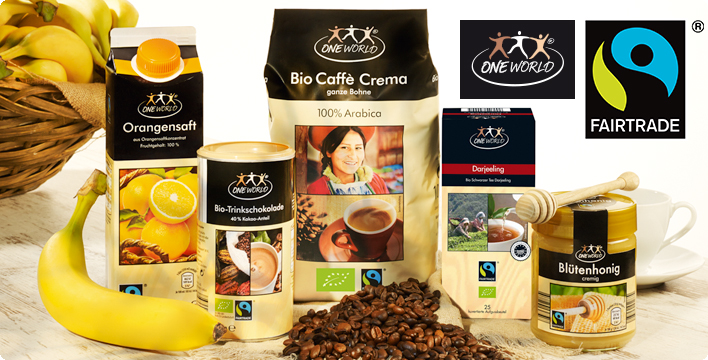

Fairtrade Lebensmittel
Eigentlich in der Produktion aufwändige Lebensmittel werden zu Dumping-Preisen auf den Markt geworfen. Durch diese Preispolitik können viele Menschen in den Billig-Lohn-Ländern von ihrer harten Arbeit kaum Überleben. Eine Lösung aus diesem Teufelskreis bietet der Faire Handel.